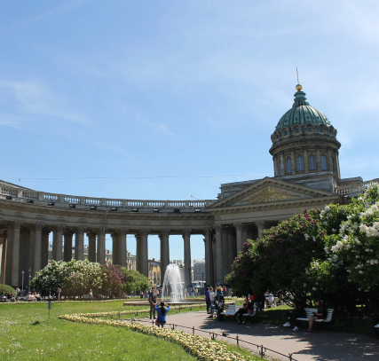
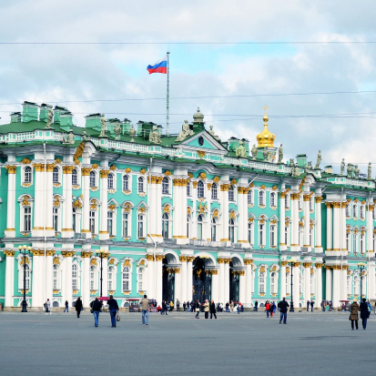
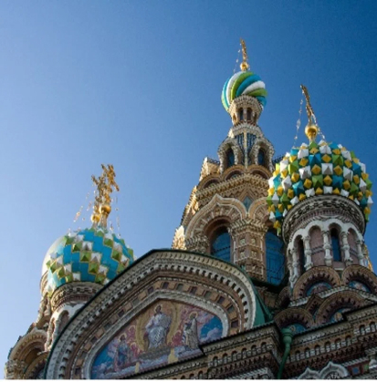
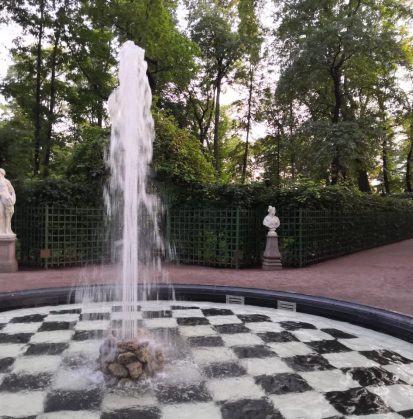
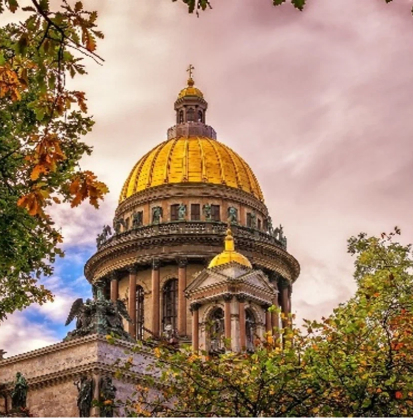
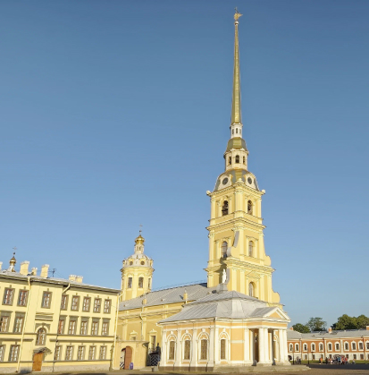

$99.00
Невский проспект и Казанский собор
Протяжённость Невского проспекта более четырёх километров. Самая
оживленная и интересная его часть между площадью Восстания у
Московского вокзала и Дворцовой площадью, на которой стоит
императорский Зимний дворец. На этом отрезке много магазинов,
ресторанов и кафе, часто играют уличные музыканты, художники
рисуют пейзажи и портреты.

$79.00
Дворцовая площадь и Эрмитаж
Если дойти по Невскому проспекту до Невы, справа вы увидите
Дворцовую площадь. Она выложена брусчаткой, а в центре
возвышается Александрийский столп, на вершине которого — фигура
ангела. Столп возвели по указу императора Николая I в память о
победе его старшего брата Александра I над Наполеоном.

$89.00
Спас на Крови
От Дворцовой площади можно пройти к храму Спаса на Крови. Его
построили на месте гибели Александра II, а внутри хранится
фрагмент мостовой, на которой тот погиб в результате покушения.
Храм — один из наиболее узнаваемых и в первую очередь восхищает
своим внешним видом с резными кокошниками на окнах, ювелирной
эмалью, восьмигранным шатром и разноцветными куполами. А мозаика
внутри занимает площадь более 7000 кв. м. — можно покрыть всю
дорогу от Невского до входа в здание. Пол выложен разнообразными
орнаментами из мраморных плит.

$89.00
Летний сад
Летний сад появился в городе по воле Петра I, который решил
устроить здесь свою резиденцию. Дворец построили в 1712 году, а
на облагороженной территории вокруг него разместили фонтаны и
античные статуи, часть которых царь лично привёз из Италии.
Сейчас среди них и коридоров из зелени расположены лавочки,
скульптуры и беседки, которые оплетены растениями. Парковая зона
начинается от Михайловского замка и идёт вдоль реки Фонтанки,
которая впадает в Неву. Вход в Летний сад бесплатный. Зимой
фонтаны не работают, а в апреле сад закрыт на просушку.

$89.00
Исаакиевский собор
Храм входит в число крупнейших культовых зданий мира, а ещё это
по сути главный кафедральный собор города. Внутри вы можете
посмотреть музейную экспозицию и посетить божественную литургию.
Обязательно поднимитесь на смотровую площадку над колоннадой
собора, чтобы полюбоваться панорамой города с высоты 101 метра.
Учтите, что наверху холодно и ветрено, а идти нужно по
ступенькам, которых аж 262. Во время подъёма вас не будет
покидать ощущение монументальности и величественности от высоких
сводов, массивных богато украшенных стен и большого числа икон.

$89.00
Петропавловская крепость
Петропавловская крепость расположена на небольшом острове, на
который можно попасть по одному из мостов (вы их даже не
заметите — настолько они небольшие). Вход на территорию
свободный: вы сможете прогуляться по брусчатым улицам, посетить
несколько музеев, посмотреть собор и усыпальницу российских
императоров и князей. Раз в день ровно в 12 часов из крепости
стреляет пушка. По ней можно сверять часы. Одним из наиболее
интересных мест крепости считается главная политическая тюрьма
царской России в Трубецком бастионе.